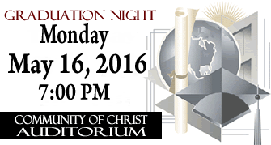

Seniors Last Day / Senior Checkout is Friday, May 13, 2016
Once finals are completed, all seniors will be directed to the Auxiliary Gym to begin the checkout process. You will not receive a cap or gown at Senior Checkout to participate in the graduation ceremony until all fines have been paid and all obligations met. This includes all academic, athletic, activity fines, detentions and community service completed. Remember, you will NOT be able to check out on May 13 until you have completed your Senior Exit Survey (directions below).
Senior Exit Survey
You must complete the Senior Exit Survey before you will be able to check out on May 13. Please complete the Senior Exit Survey online as follows:
- Click this link: Senior Exit Survey.
- Enter your personal information and then complete the survey.
Project Graduation is Monday, May 16, 2016
After graduation more info...